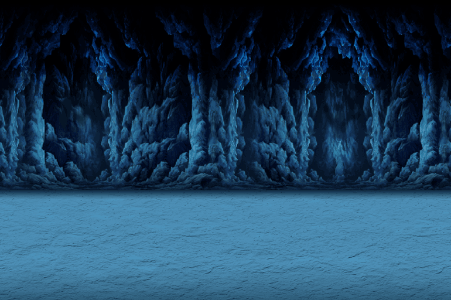

-Sprites are from the Sprite Sheet created by Krixian Skye Del Rosario
-https://image.pngaaa.com/203/5937203-middle.png
-https://battlecats.club/wp-content/themes/nyanko/img/index/mainvisual_chara02.png
-https://battlecats.club/en/series/battlecats/img/game_chara02.png
-https://static.wikia.nocookie.net/battle-cats/images/a/a5/Mobile_-_The_Battle_Cats_-_Cat_Base.png/revision/latest?cb=20180325132026
-https://upload.wikimedia.org/wikipedia/en/thumb/1/1f/PONOS_logo.png/220px-PONOS_logo.png
-https://play-lh.googleusercontent.com/WZ6STwaXOFyrlCFH9Ls4uHQYVPDhISlUo3jTLpzJNMjpCsnP12yoEYZ8dSKXPFctEZyD
-https://img.utdstc.com/icon/4d6/8f4/4d68f411394ebf275f63db2dc5400cc4f0426ffbc98c3b936b7ec221506420ce:200
-https://static.wikia.nocookie.net/battle-cats/images/1/14/Bg000.png/revision/latest/scale-to-width-down/770?cb=20160217191222
-https://static.wikia.nocookie.net/battle-cats/images/e/eb/Bg007.png/revision/latest/scale-to-width-down/770?cb=20160217192055
-https://static.wikia.nocookie.net/battle-cats/images/c/ca/Bg006.png/revision/latest/scale-to-width-down/770?cb=20160217191746
-https://static.wikia.nocookie.net/battle-cats/images/d/d0/Cotc_7.png/revision/latest/scale-to-width-down/770?cb=20190530004710
-https://static.wikia.nocookie.net/battle-cats/images/7/7a/Bg010.png/revision/latest/scale-to-width-down/770?cb=20160217192155
-https://static.wikia.nocookie.net/battle-cats/images/e/e8/Bg135.png/revision/latest/scale-to-width-down/770?cb=20200528192443
-https://static.wikia.nocookie.net/battle-cats/images/e/e6/Epicbackground3.png/revision/latest/scale-to-width-down/770?cb=20180729164826
-https://static.wikia.nocookie.net/battle-cats/images/9/95/Bg156.png/revision/latest/scale-to-width-down/770?cb=20210730191137
-https://www.youtube.com/watch?v=eMR2EHrv5dg&list=PL-qRvz21Rlx3y92XCMsrvCXzKKzAk2rEp&index=2
-https://www.youtube.com/watch?v=JURtuwD9TsU&list=PL-qRvz21Rlx3y92XCMsrvCXzKKzAk2rEp&index=4
-https://www.youtube.com/watch?v=LZe7fJ44ZCg&list=PL-qRvz21Rlx3y92XCMsrvCXzKKzAk2rEp&index=13
-https://www.youtube.com/watch?v=JeKuA9pM0H0&list=PL-qRvz21Rlx3y92XCMsrvCXzKKzAk2rEp&index=15
-https://www.youtube.com/watch?v=PmvjYXQufsk&list=PL-qRvz21Rlx3y92XCMsrvCXzKKzAk2rEp&index=10
-https://www.youtube.com/watch?v=GMSQ0BQ2au4&list=PL-qRvz21Rlx3y92XCMsrvCXzKKzAk2rEp&index=18
-https://www.youtube.com/watch?v=jf2nSwZn-aE&list=PL-qRvz21Rlx3y92XCMsrvCXzKKzAk2rEp&index=12
-https://www.youtube.com/watch?v=CTX-cVIE5Mk&list=PL-qRvz21Rlx3y92XCMsrvCXzKKzAk2rEp&index=16
-https://en.wikipedia.org/wiki/PONOS
-https://twitter.com/FerrariEsports/status/1414857126644785154?cxt=HHwWhIC9me_DyqInAAAA
-https://battle-cats.fandom.com/wiki/Category:Normal_Cats
-https://battle-cats.fandom.com/wiki/Category:Special_Cats
-https://battle-cats.fandom.com/wiki/Category:Red_Enemies
-https://battle-cats.fandom.com/wiki/Category:Metal_Enemies
-https://battle-cats.fandom.com/wiki/Empire_of_Cats#Chapter_3:_Revival_of_Bahamut-Cat
-https://battle-cats.fandom.com/wiki/Category:Angel_Enemies
-https://battle-cats.fandom.com/wiki/Enemy_Units#:~:text=The%20different%20traits%20include%20Red,enemy%20bases)%20are%20considered%20Typeless.
-https://battle-cats.fandom.com/wiki/Empire_of_Cats
-https://battle-cats.fandom.com/wiki/Into_the_Future
-https://battle-cats.fandom.com/wiki/Cats_of_the_Cosmos
